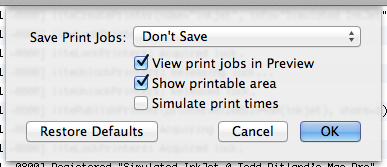

The Printer Simulator application provides several preferences that control what aspects of printing are simulated.

The Preferences Window
Where you'd like to save print jobs (if at all).
Check this box to see the results of printing in the Preview application.
Check this box to show the printable area in Preview. The margins of the page will show up yellow indicating that any content in the yellow zone would be clipped by a printer.
Check this box to slow down printing. This simulates the time an actual printer would take to print the job.
Click this button to restore the default preferences.